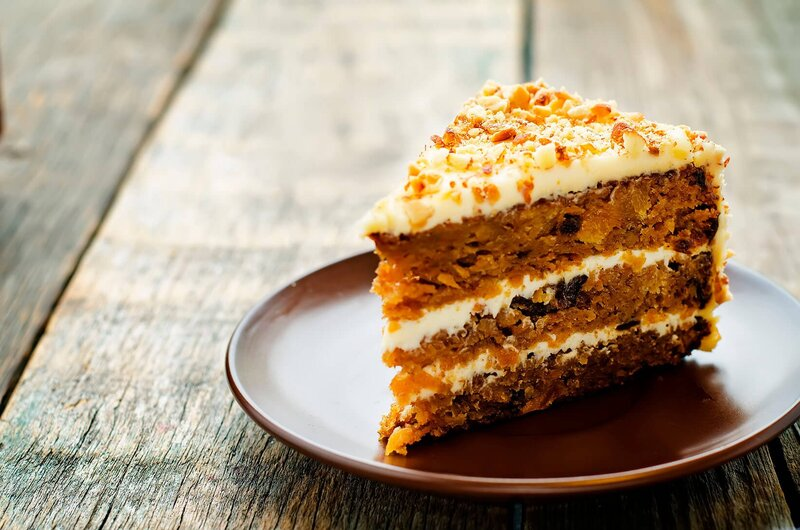

The Best Carrot Cake

What Does This Cake Taste Like?
With its outstanding spice flavor, super moist crumb, and velvety cream cheese
frosting, this is truly a one of a kind carrot cake. Most of its flavor comes from brown sugar,
cinnamon, ginger, nutmeg, and fresh carrots. Just follow all the steps and you will soon be
enjoying a perfect homemade carrot cake.
Cake Ingredients
- 2 cups (260g) chopped pecans (optional)
- 2 ½ cups (312g) all-purpose flour
- 1 ½ cups (300g) packed light or dark brown sugar
- ½ cup (100g) granulated sugar
- 1 cup (240ml) vegetable oil or canola oil or melted coconut oil
- 4 large eggs
- ¾ cup (133g) unsweetened applesauce or crushed pineapples
- 1 teaspoon vanilla extract
- 2 teaspoon baking powder
- 1 tablespoon baking soda
- ½ teaspoon salt
- 1 ½ teaspoons ground cinnamon
- 1 teaspoon ground ginger
- ¼ teaspoon ground nutmeg
- ¼ teaspoon ground cloves
- 2 cups (260g) grated carrots
Frosting Ingredients
- 450g full-fat block cream cheese at room temperature
- ½ cup (115g) unsalted butter at room temperature
- 4 cups (480g) confectioners sugar
- 1 ½ teaspoons vanilla extract
- Pinch of salt
Instructions
- Make the cake. Start by preheating the oven to 149°C. Line a baking sheet with
parchment paper, spread the chopped pecans on the sheet and toast for 7-8 minutes. Remove from
the oven and allow to cool for 10-15 minutes.
- Turn the oven up to 177°C. Grease two or three 9-inch cake pans, line with parchment paper, then
grease the parchment paper.
- Whisk the brown sugar, granulated sugar, oil, eggs, applesauce, and vanilla together in a large bowl
until combined.
- In another large bowl, whisk the flour, baking powder, baking soda, salt, cinnamon, ginger, nutmeg,
and cloves together. Pour the wet ingredients into the dry ingredients and, using a spatula, fold
the ingredients together until just combined. Fold in the carrots and 1 cup of the toasted pecans.
- Pour the batter evenly into the cake pans. If using three cake pans, bake for 20-24 minutes. If using
two cake pans, bake for 30-35 minutes. Test the center with a toothpick. If it comes out clean,
the cakes are done. If not, continue to bake until cooked through but be careful not to over-bake.
Allow the cakes to cool completely in the pans set on a rack
- Make the frosting. In a large bowl using a hand mixer or stand mixer, beat the
cream cheese and butter together on medium speed until smooth, about 2 minutes. Add the confectioners sugar,
vanilla extract, and a pinch of salt. Beat on low speed for 30 seconds, then increase to high speed and beat
for 3 minutes until completely combined and creamy. Add more confectioners sugar if frosting is too thin,
a little milk if frosting is too thick, or an extra pinch of salt if frosting is too sweet. Frosting should
be soft, but not runny.
- Assemble the cake. Using a serrated knife or cake leveler, layer off the tops of the cakes
to create a flat surface. Place 1 cake layer on your cake stand. Evenly cover the top with frosting.
Top with 2nd layer, more frosting, and then top with the 3rd layer. Spread the remaining frosting all over
the top and sides. Decorate the sides and top of the cake with the remaining toasted pecans. Refrigerate cake
for at least 15-20 minutes before slicing.
- The leftover cake can be stored in a tight container and refrigerated for up to 5 days.